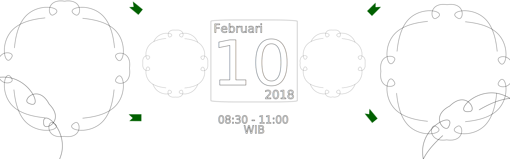

Bentuk kegiatan
-
Open House INIS
- Konsep pendidikan akhlak
-
Tips memilih sekolah ala ulama terdahulu
Oleh: Ustadz Zaki Abdul Qodir, Lc.
- Testing
-
Acara anak sholih
- Mewarnai 🌁
- Memanah 🏹
- Bazar
Komitmen pendidikan di INIS
- Mengupayakan pendidikan akhlak yang didasari nilai-nilai keimanan dan keislaman
- Tahfidz mutqin 3 juz
- Sistem modular
- Hanya 5 mapel
- Perbandingan jam pelajaran 80 diniyah dan 20% umum
- Outing Class (renang, memanah, berkuda, dll)
- Aplikatif
- Program pembiasaan
Jl. Cendrawasih (depan masjid pustekom), Cipayung, Tangsel. (Gedung warna hijau)
